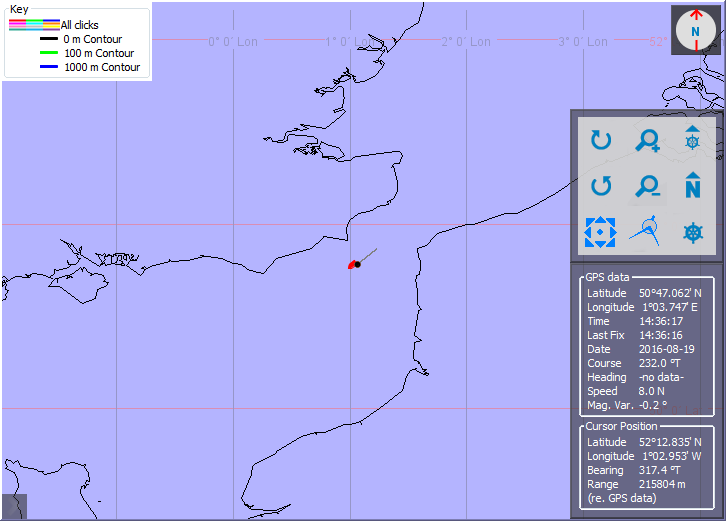
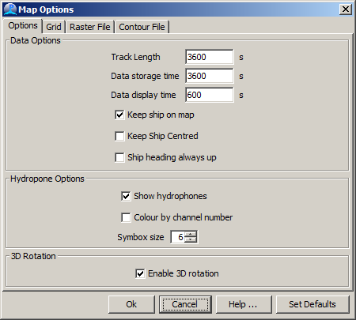
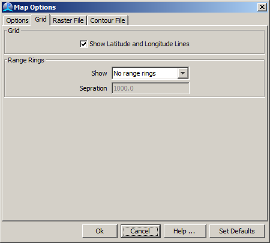
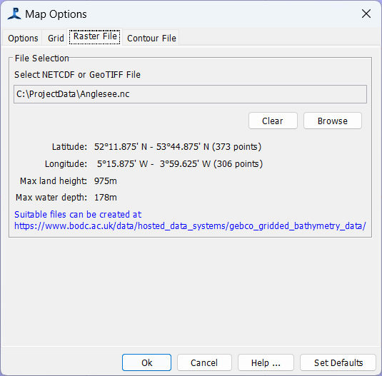
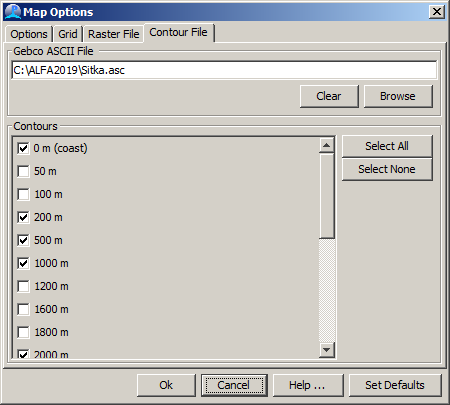

The map provides a plan view of the survey area. The figure below is an example screen shot of the map in its simplest configuration.

The vessel which hosts the GPS is indicated by a red icon and the course of the vessel, as derived from the GPS data, is indicated by the direction of the vessel icon.
By default, when PAMGuard starts up the vessel icon is placed in the centre of the map. Left clicking on the map allows the user to drag the map in the direction of the cursor.
The vessel's recent track is indicated by a grey line.
Selecting Map>Map options or right clicking anywhere on the map and selecting "Map Options" allows the user to set the "map lifetime" - i.e. the length (in time) of the vessel track line and whether or not positions of hydrophones should be shown.

Other options include keeping the ship always on the map, keeping it centred and telling the map to rotate so that the ships heading is always towards to top of the screen.
It is also possible to enable rotation of the map in three dimensions. Once enabled, hold the Shift key and drag the map with the mouse to rotate.
Two grids are now available and can be selected by the user on the 'Grid' tab.

The default grid is lines of latitude (red) and longitude (blue). The resolution of the latitude and longitude lines displayed is automatically set, dependent on the map zoom factor. In the upper right hand corner of the map, a compass icon indicates the rotation of the map.
you can also display concentric rings centred about the ship.
PAMGuard currently supports display of raster and contour data which can be exported from the BODC website or the GEBCO software.
Raster and contour maps can be selected independently and it's quite OK to have both - a raster map overlayed with contours.
PAMGuard can also use GeoTIFF files as a background image, for instance a satellite image generated from Google Earth or from GIS software.
Map files are selected on the third and fourth tabs of the map options dialog
On the Raster File tab, select either a NetCDF file downloaded from GEBCO, or a GeoTIFF image file covering your area of interest.

On the Contour File tab, select a GEBCO contour file.

Click here for information on making maps and other background images for PAMGuard.